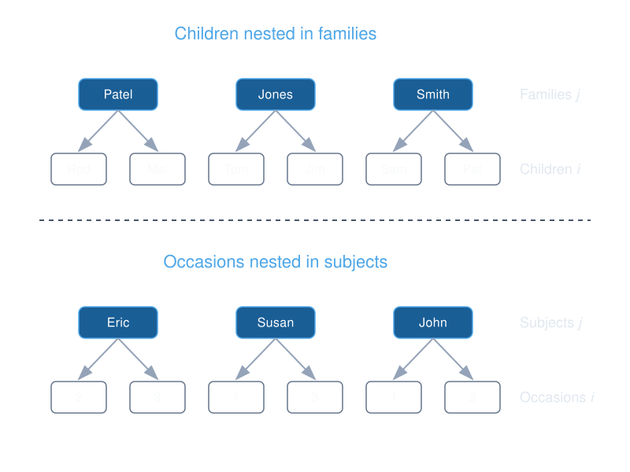
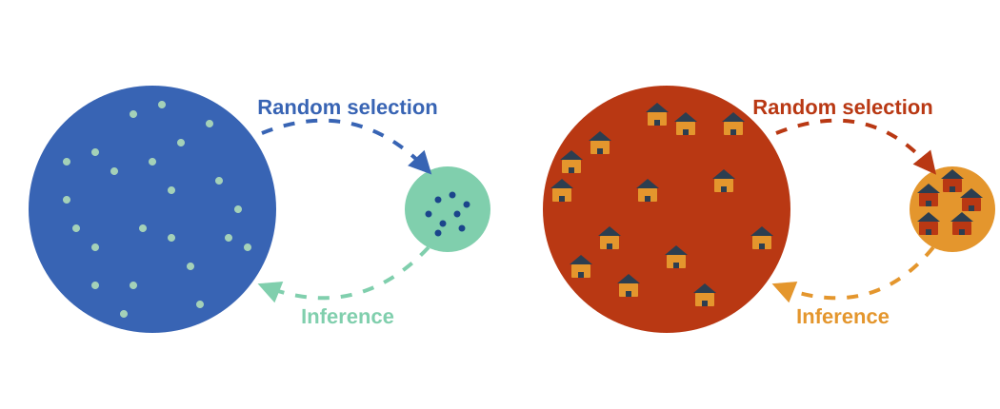
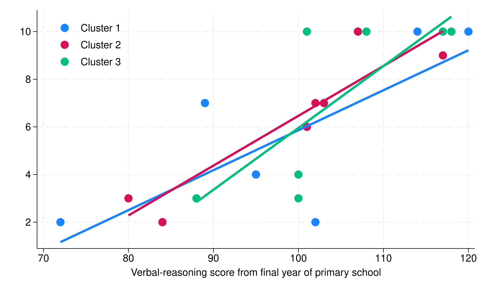
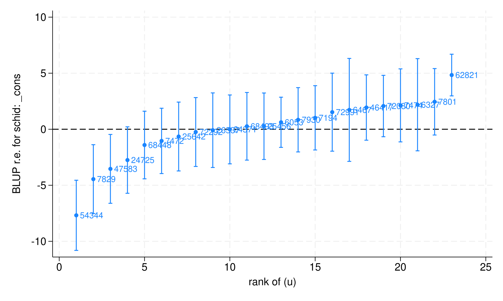
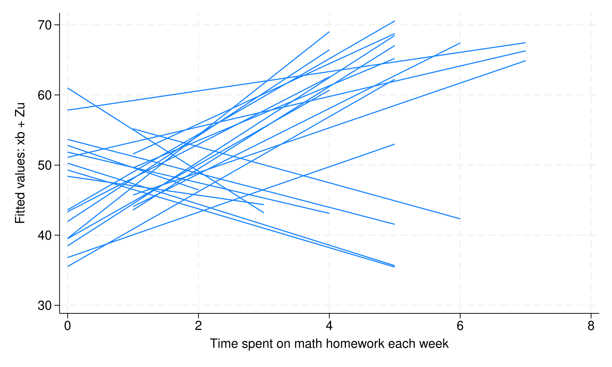
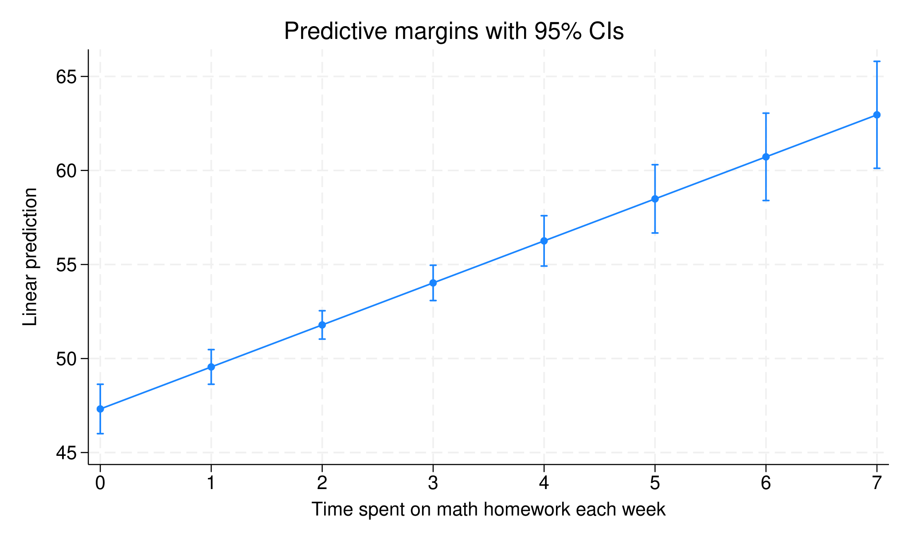
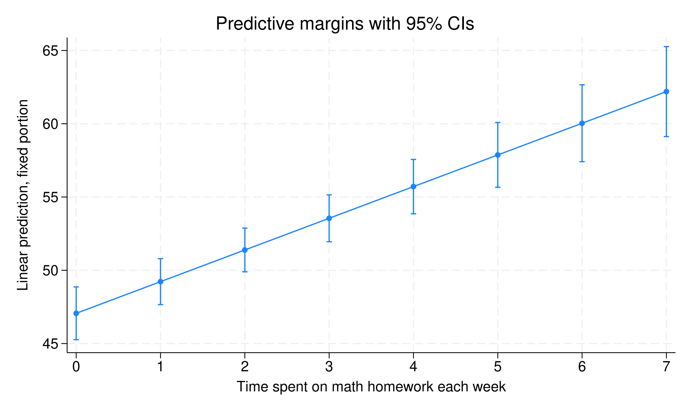
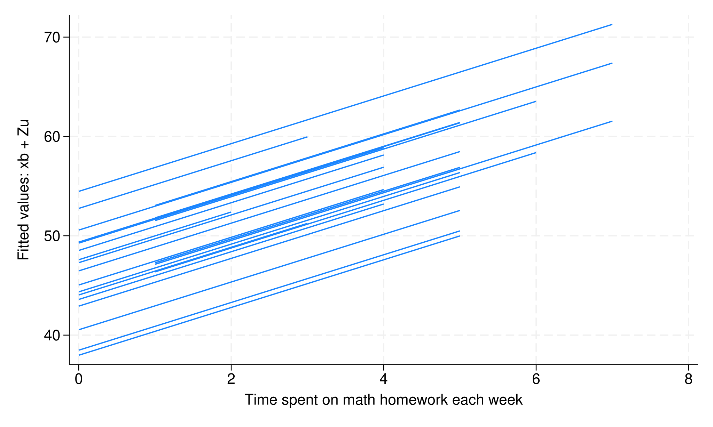

Introduction to multilevel modeling using Stata
Meghan Cain, PhD
Director of Educational Services at StataCorp
October 20, 2026
Outline
Nested data structures

Random effects

Multilevel models

Basic syntax in Stata
. xtreg math homework . mixed math homework || schid:
Model interpretation

Two examples

Nested data structures
- Observations are grouped into higher-level units, called clusters or groups.
- Observations within a cluster are correlated.
- Classic nesting examples
- Students within schools
- Patients within doctors
- Employees within companies
- Repeated measurements within individuals
- Data can be collected at the observation level or the cluster level.
The dataset
- In this dataset, we have 519 students (level 1) nested within 23 schools (level 2).
. use math . list in 50/60, sepby(schid) +---------------------------------------------------+ | schid ses homework schtype ratio math | |---------------------------------------------------| 50. | 6327 .56 1 Private 23 56 | 51. | 6327 1 1 Private 23 61 | 52. | 6327 -.44 3 Private 23 39 | |---------------------------------------------------| 53. | 6467 -.27 0 Private 19 42 | 54. | 6467 -1.07 1 Private 19 46 | 55. | 6467 -.3 3 Private 19 61 | 56. | 6467 -.49 3 Private 19 67 | 57. | 6467 1.16 4 Private 19 67 | |---------------------------------------------------| 58. | 7194 .25 0 Public 21 42 | 59. | 7194 -.53 0 Public 21 43 | 60. | 7194 -.89 0 Public 21 62 | +---------------------------------------------------+ . codebook schid ------------------------------------------------------------------------------------------ schid School ID ------------------------------------------------------------------------------------------ Type: Numeric (float) Range: [6053,72991] Units: 1 Unique values: 23 Missing .: 0/519 Mean: 35488.7 Std. dev.: 26056.7 Percentiles: 10% 25% 50% 75% 90% 6327 7801 25642 62821 72080
Linear regression
- We can use linear regression to estimate the relationship between a student's math score and the number of hours they spend on math homework each week, controlling for socioeconomic status, the student-teacher ratio of their school, and whether their school is public or private.
. regress math homework ses c.ratio##schtype Source | SS df MS Number of obs = 519 -------------+---------------------------------- F(5, 513) = 52.99 Model | 20232.8571 5 4046.57141 Prob > F = 0.0000 Residual | 39175.1892 513 76.3648912 R-squared = 0.3406 -------------+---------------------------------- Adj R-squared = 0.3341 Total | 59408.0462 518 114.687348 Root MSE = 8.7387 --------------------------------------------------------------------------------- math | Coefficient Std. err. t P>|t| [95% conf. interval] ----------------+---------------------------------------------------------------- homework | 2.234407 .2775453 8.05 0.000 1.689142 2.779672 ses | 4.462329 .5643353 7.91 0.000 3.353637 5.571022 ratio | .0741481 .1020049 0.73 0.468 -.1262507 .2745469 | schtype | Private | 0 (base) Public | 5.3203 3.141853 1.69 0.091 -.8521821 11.49278 | schtype#c.ratio | Public | -.3979843 .1712856 -2.32 0.021 -.7344918 -.0614768 | _cons | 46.96202 2.101312 22.35 0.000 42.83378 51.09026 ---------------------------------------------------------------------------------
. quietly margins, at(homework=(0/7)) plot


Two problems:
- We have a nested data structure, which violates the independence assumption of linear regression.
- We want to answer questions about both the individual and cluster levels.
Problem 1
- Nested data structures violate the independence assumption of linear regression, leading to:
- biased standard errors
- biased test statistics
- inflated Type I error rates
- The easiest solution is to use cluster-robust standard errors to correct the standard errors and test statistics of the regression coefficients.
. regress math homework ses c.ratio##schtype, vce(cluster schid) Linear regression Number of obs = 519 F(5, 22) = 36.41 Prob > F = 0.0000 R-squared = 0.3406 Root MSE = 8.7387 (Std. err. adjusted for 23 clusters in schid) --------------------------------------------------------------------------------- | Robust math | Coefficient std. err. t P>|t| [95% conf. interval] ----------------+---------------------------------------------------------------- homework | 2.234407 .5931955 3.77 0.001 1.004195 3.464619 ses | 4.462329 .7662626 5.82 0.000 2.873198 6.051461 ratio | .0741481 .2716558 0.27 0.787 -.4892315 .6375278 | schtype | Private | 0 (base) Public | 5.3203 6.666345 0.80 0.433 -8.504853 19.14545 | schtype#c.ratio | Public | -.3979843 .3025005 -1.32 0.202 -1.025332 .2293634 | _cons | 46.96202 6.67312 7.04 0.000 33.12282 60.80122 ---------------------------------------------------------------------------------
Problem 2
- Linear regression doesn't allow us to answer questions about both the individual and cluster levels.
- For example, we might want to know:
- How much of a student's math score is dictated by their own characteristics versus the school they attend?
- Does the impact of a specialized math tutoring program on test scores vary from school to school?
- Does a student's own family income improve their grades, or does simply attending a school with a high average family income provide a separate, additional boost?
- The solution to this problem is to use multilevel/mixed-effects models (MLMMs).
- MLMMs provide correct standard errors and test statistics.
- MLMMs can model variation at both the individual and cluster levels.
- Also known as variance-component models or hierarchical linear models (HLM), this modeling framework incorporates both fixed and random effects.
Random effects
- Random effects are unobserved variables that capture the variation in the outcome variable at the cluster level.
- Just as we assume that the individuals are drawn from a population, we can also assume that the clusters are drawn from a population.
Multilevel/mixed-effects models (MLMMs)
MLMMs disaggregate the variance in the outcome variable into observation-level and cluster-level components.
- Fixed-effect coefficients estimate average effects across all clusters.
- Random-effect coefficients capture variation in the outcome variable at the cluster level.
- Level-1 residuals capture the remaining variation in the outcome variable at the observation level.
MLMMs in Stata
There are two commands in Stata to fit multilevel models: xtreg and mixed
The xtreg command is simpler to use and is suitable for basic random-intercept models.
. xtset schid Panel variable: schid (unbalanced) . xtreg math homework ses c.ratio##schtype, mle Random-effects ML regression Number of obs = 519 Group variable: schid Number of groups = 23 Random effects u_i ~ Gaussian Obs per group: min = 5 avg = 22.6 max = 67 LR chi2(5) = 116.88 Log likelihood = -1841.9495 Prob > chi2 = 0.0000 --------------------------------------------------------------------------------- math | Coefficient Std. err. z P>|z| [95% conf. interval] ----------------+---------------------------------------------------------------- homework | 2.161546 .2692851 8.03 0.000 1.633757 2.689335 ses | 3.674275 .5706132 6.44 0.000 2.555893 4.792656 ratio | .2074699 .2007692 1.03 0.301 -.1860306 .6009704 | schtype | Private | 0 (base) Public | 8.212979 5.905771 1.39 0.164 -3.362121 19.78808 | schtype#c.ratio | Public | -.5638343 .3249251 -1.74 0.083 -1.200676 .0730072 | _cons | 44.42809 3.959143 11.22 0.000 36.66831 52.18787 ----------------+---------------------------------------------------------------- /sigma_u | 3.055326 .6190318 2.053988 4.544827 /sigma_e | 8.164963 .259254 7.672323 8.689236 rho | .1228265 .0445849 .0558368 .2323195 --------------------------------------------------------------------------------- LR test of sigma_u=0: chibar2(01) = 33.06 Prob >= chibar2 = 0.000
The mixed command is more flexible and allows for more complex model specifications.
. mixed math homework ses c.ratio##schtype || schid: , stddev Mixed-effects ML regression Number of obs = 519 Group variable: schid Number of groups = 23 Obs per group: min = 5 avg = 22.6 max = 67 Wald chi2(5) = 138.17 Log likelihood = -1841.9495 Prob > chi2 = 0.0000 --------------------------------------------------------------------------------- math | Coefficient Std. err. z P>|z| [95% conf. interval] ----------------+---------------------------------------------------------------- homework | 2.161546 .2692844 8.03 0.000 1.633758 2.689333 ses | 3.674275 .5621845 6.54 0.000 2.572414 4.776137 ratio | .2074699 .2005317 1.03 0.301 -.1855651 .6005048 | schtype | Private | 0 (base) Public | 8.212978 5.903493 1.39 0.164 -3.357655 19.78361 | schtype#c.ratio | Public | -.5638342 .3246283 -1.74 0.082 -1.200094 .0724256 | _cons | 44.42809 3.956943 11.23 0.000 36.67262 52.18356 --------------------------------------------------------------------------------- ------------------------------------------------------------------------------ Random-effects parameters | Estimate Std. err. [95% conf. interval] -----------------------------+------------------------------------------------ schid: Identity | sd(_cons) | 3.055324 .619038 2.053977 4.544842 -----------------------------+------------------------------------------------ sd(Residual) | 8.164963 .259254 7.672323 8.689236 ------------------------------------------------------------------------------ LR test vs. linear model: chibar2(01) = 33.06 Prob >= chibar2 = 0.0000 . estat icc Residual intraclass correlation ------------------------------------------------------------------------------ Level | ICC Std. err. [95% conf. interval] -----------------------------+------------------------------------------------ schid | .1228263 .0445853 .0585792 .2396032 ------------------------------------------------------------------------------
Interpretation of results
We interpret the fixed-effect coefficients as the average expected change in the outcome with a one-unit increase in the predictor, holding all other predictors constant.
. quietly margins, at(homework=(0/7)) plot


We interpret the random-effects as the difference between the average effect across all clusters and the effect in that particular cluster.

Random-intercept models
. mixed math homework || schid: , stddev Mixed-effects ML regression Number of obs = 519 Group variable: schid Number of groups = 23 Obs per group: min = 5 avg = 22.6 max = 67 Wald chi2(1) = 75.32 Log likelihood = -1865.247 Prob > chi2 = 0.0000 ------------------------------------------------------------------------------ math | Coefficient Std. err. z P>|z| [95% conf. interval] -------------+---------------------------------------------------------------- homework | 2.401972 .2767745 8.68 0.000 1.859504 2.94444 _cons | 46.34945 1.141154 40.62 0.000 44.11283 48.58607 ------------------------------------------------------------------------------ ------------------------------------------------------------------------------ Random-effects parameters | Estimate Std. err. [95% conf. interval] -----------------------------+------------------------------------------------ schid: Identity | sd(_cons) | 4.497318 .7861623 3.192696 6.335042 -----------------------------+------------------------------------------------ sd(Residual) | 8.434685 .2677724 7.925855 8.976181 ------------------------------------------------------------------------------ LR test vs. linear model: chibar2(01) = 94.71 Prob >= chibar2 = 0.0000
. predict yhat1, fitted . sort schid homework . twoway (line yhat1 homework, connect(ascending))


Random-slope models
. mixed math homework || schid: homework, cov(unstructured) stddev Mixed-effects ML regression Number of obs = 519 Group variable: schid Number of groups = 23 Obs per group: min = 5 avg = 22.6 max = 67 Wald chi2(1) = 4.81 Log likelihood = -1819.5183 Prob > chi2 = 0.0283 -------------------------------------------------------------------------------------- math | Coefficient Std. err. z P>|z| [95% conf. interval] ---------------------+---------------------------------------------------------------- homework | 1.986881 .906006 2.19 0.028 .2111418 3.76262 _cons | 46.32253 1.719467 26.94 0.000 42.95244 49.69262 -------------------------------------------------------------------------------------- ------------------------------------------------------------------------------ Random-effects parameters | Estimate Std. err. [95% conf. interval] -----------------------------+------------------------------------------------ schid: Unstructured | sd(homework) | 4.097111 .7128096 2.913311 5.761938 sd(_cons) | 7.699646 1.297697 5.533621 10.71352 corr(homework,_cons) | -.8289898 .0741118 -.9287627 -.6172109 -----------------------------+------------------------------------------------ sd(Residual) | 7.300516 .2374073 6.849724 7.780974 ------------------------------------------------------------------------------ LR test vs. linear model: chi2(3) = 186.16 Prob > chi2 = 0.0000 Note: LR test is conservative and provided only for reference.

What's next
- Estimation options
- Model comparison
- Assumptions and diagnostics
- Level-1 covariance structures
- The disaggregated model
- Longitudinal data analysis
- Generalized linear mixed models
- Three-level models
Learn it all in the full course
- Multilevel/mixed models using Stata
- November 17-20, 2026
- 11am-2:30pm CT
- Enroll now!
Thank you!
Keep asking questions in the Forum.